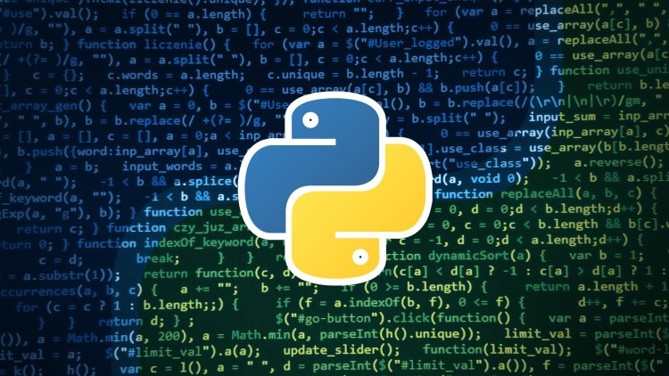

{% extends "blog/base.html" %}
{% block content %}
Python

Python в русском языке распространено название питон) — высокоуровневый язык программирования общего назначения, ориентированный на повышение производительности разработчика и читаемости кода. Синтаксис ядра Python минималистичен. В то же время стандартная библиотека включает большой объём полезных функций.
Python поддерживает структурное, объектно-ориентированное, функциональное, императивное и аспектно-ориентированное программирование. Основные архитектурные черты — динамическая типизация, автоматическое управление памятью, полная интроспекция, механизм обработки исключений, поддержка многопоточных вычислений, высокоуровневые структуры данных. Поддерживается разбиение программ на модули, которые, в свою очередь, могут объединяться в пакеты.
Эталонной реализацией Python является интерпретатор CPython, поддерживающий большинство активно используемых платформ. Он распространяется под свободной лицензией Python Software Foundation License, позволяющей использовать его без ограничений в любых приложениях, включая проприетарные[13]. Есть реализация интерпретатора для JVM с возможностью компиляции, CLR, LLVM, другие независимые реализации. Проект PyPy использует JIT-компиляцию, которая значительно увеличивает скорость выполнения Python-программ.
Python — активно развивающийся язык программирования, новые версии с добавлением/изменением языковых свойств выходят примерно раз в два с половиной года. Язык не подвергался официальной стандартизации, роль стандарта де-факто выполняет CPython, разрабатываемый под контролем автора языка. В настоящий момент Python занимает третье место в рейтинге TIOBE с показателем 8,5 %. Аналитики отмечают, что это самый высокий балл Python за все время его присутствия в рейтинге.
{% endblock %}